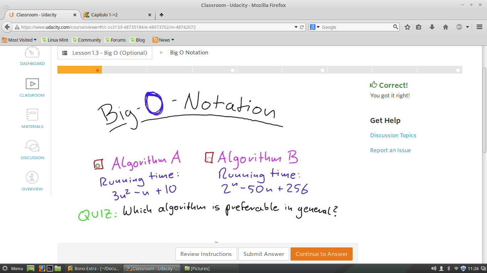
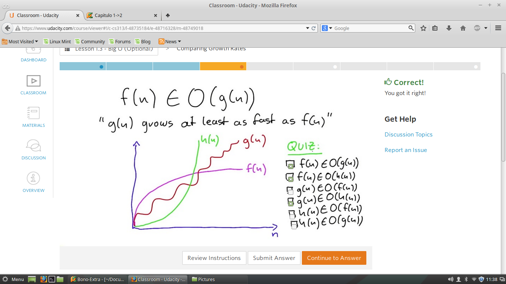
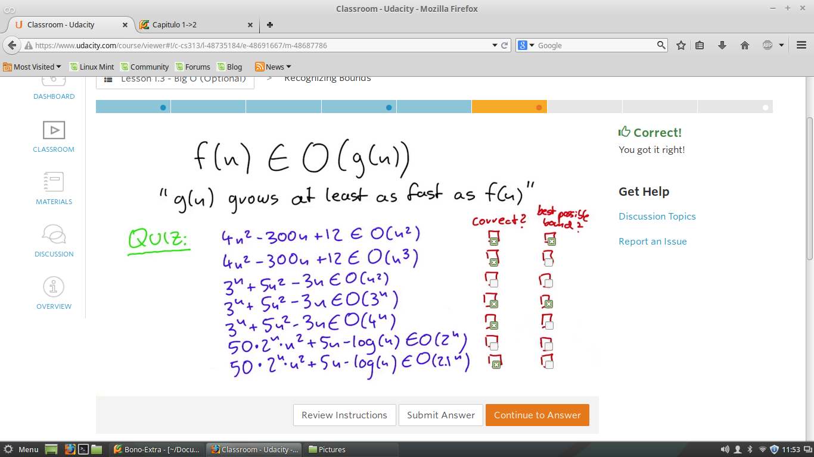
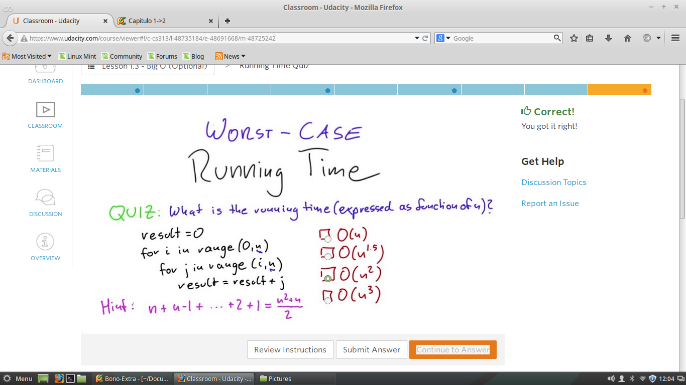

Notacion Big-O
Notaciones de Big O ->
RAM->
Peor caso ->
Quiz 1 - Datos dos Algoritmos
A partir del tiempo de complejidad ver cual es mas favorable.

Quiz 2 -Comparacion de la Tasa de Crecimieto
Dadas Tres Funciones analizar su Tasa de Crecimiento segun, la sque se cumplen de las expuestas.

Quiz 3 -Limites que ajustan la Funcion
Teniendo encuenta cada uno de los limites que sean correctos, sin embargo tambien mostar los que realmente
se ajustan al limite teniendo encuenta que ese es el verdadero proposito.

Quiz 4 - Anlizar la Complejidad del Algoritmos
Cual es la Complejidad de Ejecucion del siguiente algoritmos, como funcion de f(n)
Partiendo de la siguiente formula recursiva de pasos de ejecucion del algoritm.
